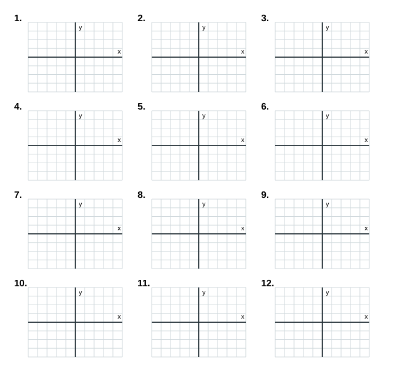
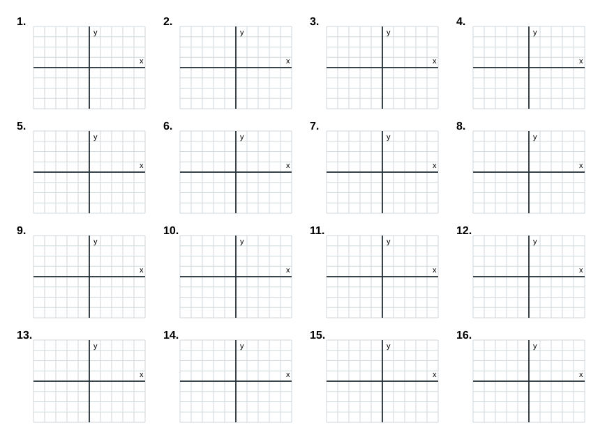

whārite pūrua
Te reo Māori terms
kauwhata
taunga
tēpara
Foundation
12 math tasks

- Draw $ y=x^2 $.
- Draw $ y=x^2+1 $.
- Draw $ y=x^2-2 $.
- Draw $ y=(x-1)^2 $.
- Draw $ y=(x+2)^2 $.
- Draw $ y=-x^2 $.
- Draw $ y=-x^2+3 $.
- Draw $ y=2x^2 $.
- Draw $ y=\frac{1}{2}x^2 $.
- Draw $ y=x^2+2x $.
- Draw $ y=x^2-4x $.
- Draw $ y=x^2+4x+3 $.
Proficient
12 math tasks

- Draw $ y=(x-2)^2-1 $. Label the turning point.
- Draw $ y=(x+3)^2+2 $. Label the turning point.
- Draw $ y=-(x-1)^2+4 $. Label the turning point.
- Draw $ y=2(x+1)^2-2 $. Label the turning point.
- Draw $ y=-\frac{1}{2}(x-2)^2+3 $. Label the turning point.
- Draw $ y=x^2-2x-3 $. Label the turning point.
- Draw $ y=x^2+4x+1 $. Label the turning point.
- Draw $ y=-x^2+2x+3 $. Label the turning point.
- Draw $ y=2x^2-4x-6 $. Label the turning point.
- Draw $ y=\frac{1}{2}x^2+2x-1 $. Label the turning point.
- Draw $ y=x^2-6x+5 $. Label the turning point.
- Draw $ y=-x^2-4x $. Label the turning point.
Excellence
16 math tasks

- Draw $ y=(x-3)^2-4 $. Label the turning point and the axis of symmetry.
- Draw $ y=-2(x+1)^2+5 $. Label the turning point and the axis of symmetry.
- Draw $ y=\frac{1}{2}(x-4)^2-3 $. Label the turning point and the axis of symmetry.
- Draw $ y=x^2-8x+12 $. Label the turning point and the axis of symmetry.
- Draw $ y=-x^2+6x-5 $. Label the turning point and the axis of symmetry.
- Draw $ y=2x^2+4x-6 $. Label the turning point and the axis of symmetry.
- Draw $ y=\frac{1}{2}x^2-3x+2 $. Label the turning point and the axis of symmetry.
- Draw $ y=-\frac{1}{2}x^2-2x+3 $. Label the turning point and the axis of symmetry.
- Draw $ y=(x+2)^2-1 $. Also mark where it crosses the $x$-axis.
- Draw $ y=-(x-4)^2+2 $. Also mark where it crosses the $x$-axis.
- Draw $ y=x^2+2x-8 $. Also mark where it crosses the $x$-axis.
- Draw $ y=-x^2+4x-1 $. Also mark where it crosses the $x$-axis.
- Draw $ y=2(x-2)^2+1 $. Choose a sensible table, then draw it.
- Draw $ y=-2(x+3)^2+4 $. Choose a sensible table, then draw it.
- Draw $ y=\frac{1}{2}(x+1)^2-4 $. Choose a sensible table, then draw it.
- Draw $ y=x^2-10x+21 $. Choose a sensible table, then draw it.